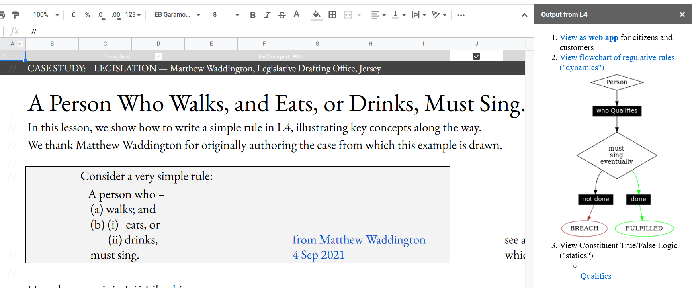
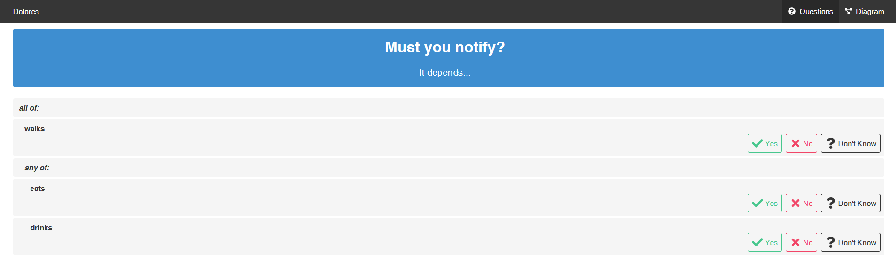

What is L4 Good For?
L4 offers a low-code way for non-lawyers to explore existing contracts and legislation, and to generate new contracts and regulations.
If the contract you need is already available in the L4 package library, you can just fill in the blanks and generate a document that you can sign, after, of course, running it past your lawyers for review.
The L4 package library will soon contain loan agreements, leasing agreements, and investment agreements like the SAFE. It also contains encodings of insurance policies based on those offered by major insurers, so you can better understand what your medical or travel insurance actually covers.
If you want to customize an existing contract template, you can fork and edit it in the LegalSS Google Sheets
To make life easier for “legal engineers”, L4 generates convenient visualizations of the logic and the moving parts of your “legal program”.
L4 also sanity-checks your programs to detect internal conflicts and loopholes.
L4 automatically generates a web app that helps end users explore the logic.
In addition to contracts, L4’s package library also contains encodings of legislation and regulation in the areas of data privacy and building permission.
The entire “Quickstart” tab is a tutorial. The other tabs in the LegalSS spreadsheet show examples of L4 at work, and illustrate common real-world usage in both contractual and legislative environments.
Documentation Timeline
This documentation was written in Oct/Nov 2022. The system is still rough around the edges.
In the future there will be more helpful documentation in the FAQ, depending on the kinds of problems that tend to occur.